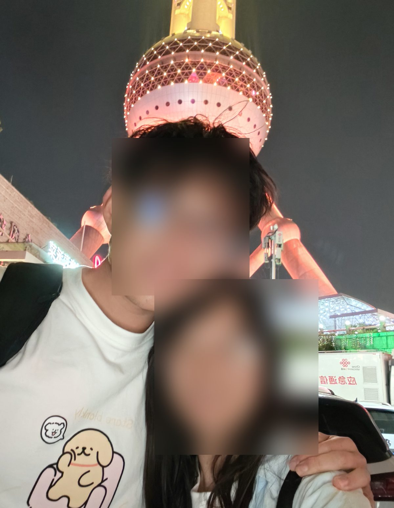
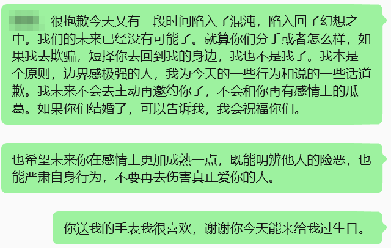

这是一篇关于第一段亲密关系的复盘。它不是为了重新审判任何人，而是为了把一年多的爱、混乱、幻想、失责和告别放回可理解的位置。二十五岁已经过去，我不想把上一段关系里的执念继续带进新的一岁。
相遇与确认
我们的开始很自然。一次普通的体育课、几次搭档、一次聊天、一次约球、一次饭后的散步，慢慢把两个原本独自生活的人推到彼此身边。真正让我被击中的，并不是某个宏大的承诺，而是一句很轻的话：以后如果你去锻炼或者出去玩，能不能带上我一起。
在那之前，我的生活大多是一个人完成的。一个人去陌生城市，一个人吃饭，一个人把精力放在学习、竞争和自我证明上。突然有人愿意进入我的生活，愿意把自己的时间交给我，这件事本身就足够让我彻底动心。
亲密关系里的理性误区
现在回看，我在关系早期就带着很重的防御和预设。我会提前讨论很多未来才可能发生的问题，试图把感情变成一个可以推演、可以辩论、可以提前规避风险的系统。我的出发点并不全是坏的：我确实在乎平等、责任和长期稳定，也希望两个人在现实层面有共同判断。
但亲密关系不是辩论赛。说服不是胜利，沉默也不等于认同。很多时候，我以为自己在解决问题，其实是在把对方的感受排除出问题之外。我给了很多理性分析，却没有给足够多的情绪承接；我以为爱可以通过框架、计划和道理来证明，却忽略了爱首先要让对方在当下感到被看见。
热恋的乌托邦
关系最幸福的时候，我们几乎共享了全部日常：一起吃饭、散步、学习、赶作业、聊天，分享各自的过去和内心深处的想法。那段时间像一个小小的乌托邦，外部压力被暂时推远，理性判断也被热烈的亲密感覆盖。
正因为它太幸福，我在很长一段时间里误以为这种幸福会自动延续。可是亲密不是关系的全部，生活也不会永远停在热恋期。后来现实压力进入，我们的学习、工作、居住和节奏都发生变化，关系开始从浪漫进入经营，而我没有及时完成角色转换。

共同生活后的失衡
当生活靠得更近，幸福感并没有自然转化为稳定经营。我开始沉浸在一种虚幻的安全感里，觉得拥抱、亲吻、晚安和“我爱你”足够维系关系，却减少了真正的共同活动、反馈和修正。过去我还会主动问这段时间哪里需要改，后来我越来越少问，也越来越少组织新的共同经验。
小事开始堆积：吃饭时不够专注、生活习惯松散、各自玩手机、周末缺少安排。单独看每件事都很小，可它们共同说明一件事：我把关系当成已经拥有的东西，而不是仍然需要每日经营的东西。感情的反馈机制失效了，我还没有意识到。
结束与反思
后来的变化并不是突然发生的。她逐渐把注意力转向新的生活环境，也在新的相处中感受到不同的照顾和确认。等我真正意识到关系已经松动时，很多东西已经不可逆。那一周我经历了非常剧烈的情绪波动，也做了一些事后看来不成熟、不体面的挽回行为。
可是情绪过去以后，我必须承认：这段关系的结束不只是“失去”，也是一次非常沉重的学习。我看见自己并不真正懂得爱里的包容、柔软和当下的陪伴；我也看见自己容易把承诺、规则、投入和交换混在一起，以为这样就能建造安全感。实际上，安全感不只是未来规划，也来自每一天被认真对待的细节。
生日那天的告别
故事的最后发生在我的生日。我们见面、吃饭、聊天，也短暂回到一种熟悉的亲密状态。那一刻我又开始幻想：如果未来有变化，我是不是还有机会。可是等她离开后，理智重新回来，我意识到这种幻想本身已经越过了我的边界。
如果我想成为一个有底线的人，就不能把自己继续放进混乱的位置里。真正的告别不是把爱突然取消，而是承认这段关系已经结束，承认我不能用旧的亲密去干扰新的生活，也不能用不经思考的承诺和花言巧语把别人重新拉回身边。
写给新的一岁
我仍然感谢这段关系。它给过我非常真实的幸福，也让我第一次知道亲密连接可以深到什么程度。它的结束同样给了我一个机会：重新理解爱不是占有，不是辩论胜利，不是把对方放进自己设计好的系统，而是在真实生活里持续看见、回应、修正和承担。
所以这篇复盘最后落在自己身上：我需要把爱变得更柔软，把边界变得更清楚，把生活重新交还给学习、身体和自我建设。过去一年的混乱、执迷、幻想、爱恨和疯狂，到这里就够了。新的一岁，我要把自己带回正轨。
